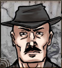

Jason “Taco” Lifeson
Owner of Somerset Steel and Supply, Crew Chief of Somerset Steel
Fourth generation owner of Somerset Steel and Supply, “Taco” continues on the proud role of protector and provider for the Somerset community. Well respected by local squadrons and community leaders, he does his best juggling his dual role of running the business and commanding the Somerset Steel squad.

“Saint” Patrick Havel
Lead Mech, Somerset Steel and Supply
If you return to town with a smoking wreck, “Saint Patrick” is the the mech that you would look to for a miracle. Having been lead mech for Somerset Steel and Supply now for three years, he has proven to be a valuable asset for the garage.
“Dona” Michele
Lead Sales Rep, Somerset Steel and Supply
“Taco” may be the owner and proprietor of Somerset Steel and Supply, but “Dona” Michele gets things out the door and off the lot. Since her arrival a few years ago in Somerset she has turned the business into a well tuned machine. Her plethora of talents include keeping the books, running the sales lot, and keeping the armory well oiled and stocked. When she is not in the shop, she is out on the range ‘testing’ the products for quality assurance needs.

“Digger” Mercado
Crew Chief of Steel Harvest, Contributor to Tavern Tales
When Steel Harvest rolls out on patrol, raiders turn tail because of this man. Not only is he a fierce combatant and brilliant tactician, he can tell a good tale. Now that we have the eHub back up we have him contributing to Tavern Tales.